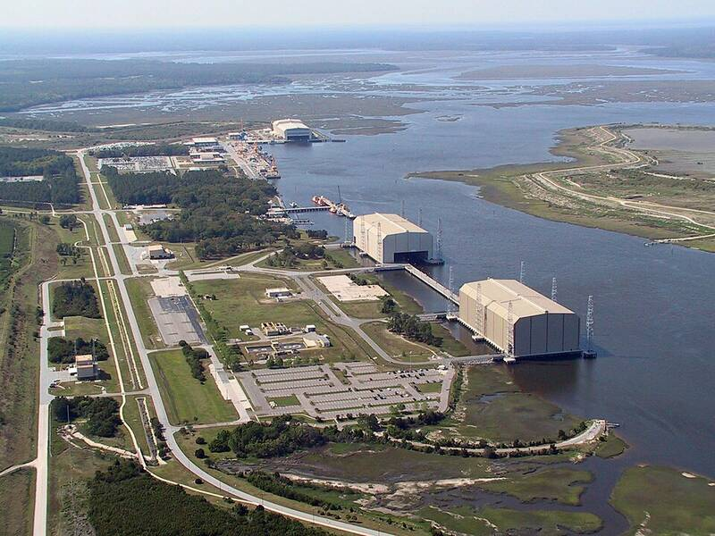

Naval Submarine Base Kings Bay
Georgia

Home port of Atlantic ballistic-missile submarines. 1
Open in the interactive Watcher
Sources
- Naval Submarine Base Kings Bay Wikipedia
Georgia

Home port of Atlantic ballistic-missile submarines. 1
Open in the interactive Watcher